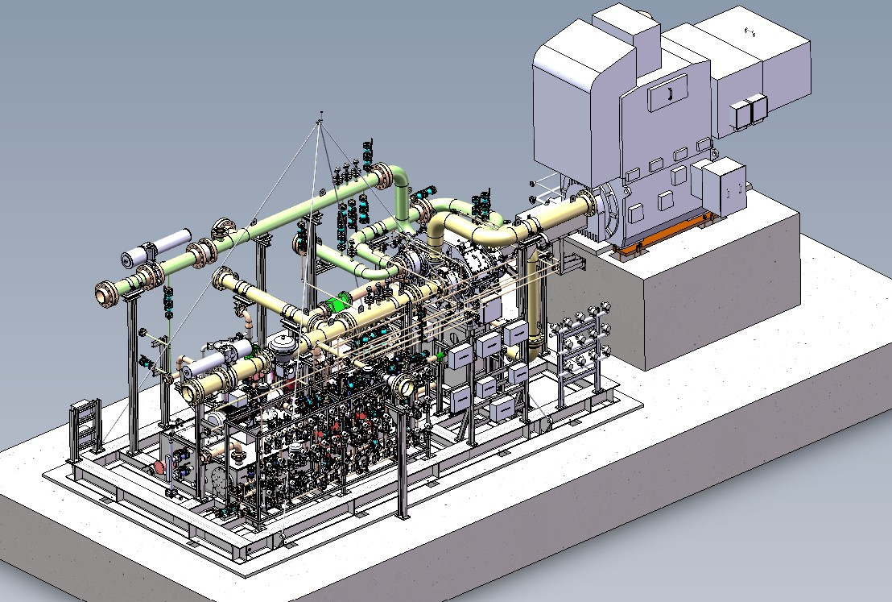
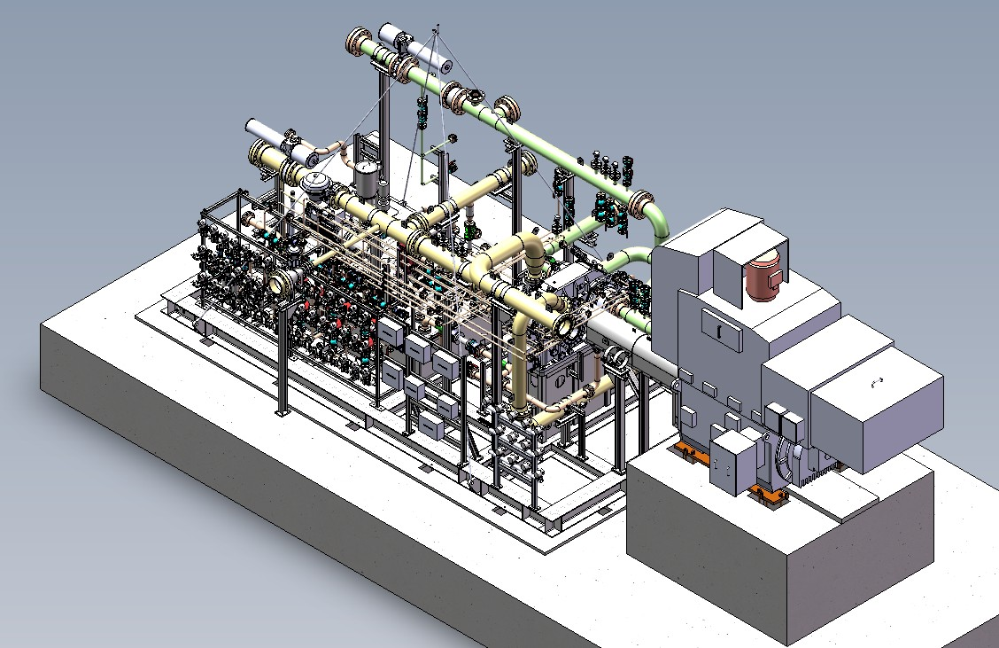
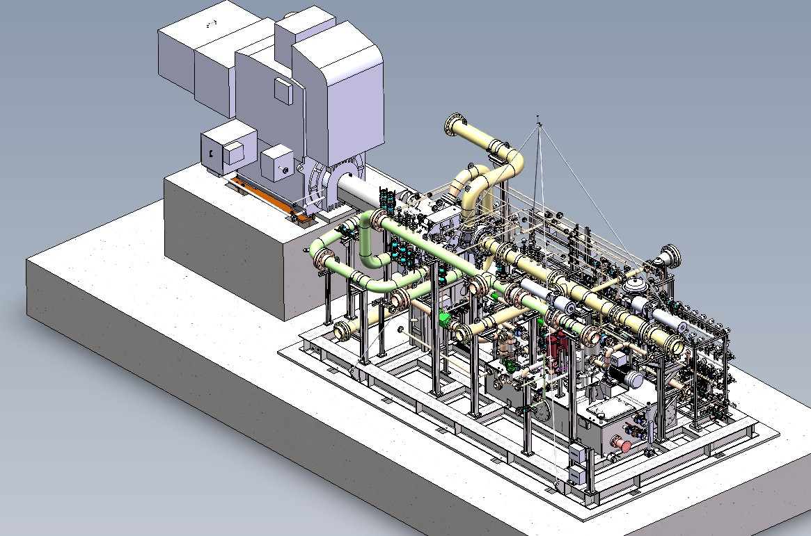
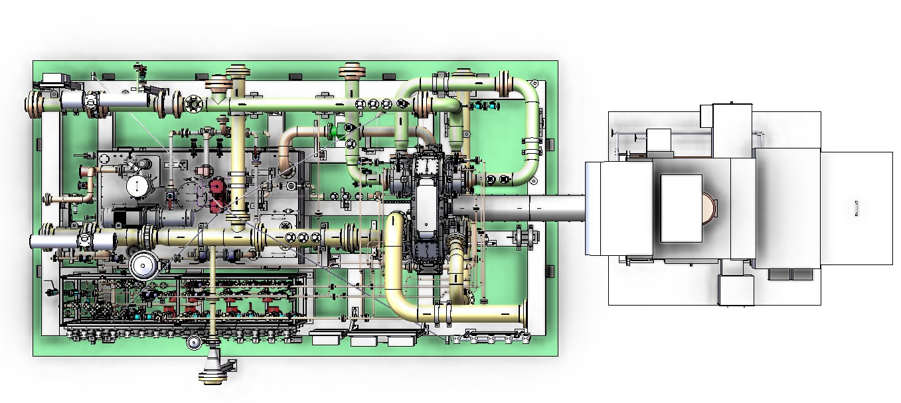
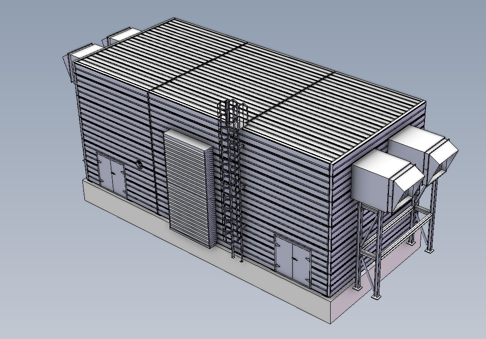

4-stage natural-gas compressor
Complete package redesign covering core equipment and auxiliary systems.
Complete package redesign and integration for Sembcorp Cogen Pte Ltd, Singapore.

Complete package redesign covering core equipment and auxiliary systems.
Intercoolers, after cooler, five-fan recycle cooler and four-fan oil cooler, plus fan-cooled HV motor.
3D redesign, piping calculations, system integration, drawings, coordination and FAT support.




Four compression stages on an integrally geared machine with air-cooled fin-fan intercoolers and after cooler, anti-surge recycle with a five-fan recycle cooler, inside a ventilated noise hood.
Reservoir with heater and oil mist eliminator, main and auxiliary oil pumps, pressure spill-back, three-way temperature control with an air-cooled oil cooler (4 fans × 25 %), dual filters with transfer valve, and supply to bearings A/B/C and the gearbox.
Process seal gas from discharge with nitrogen backup for standstill, dual 5 µm filters, pressure control and a header feeding the dry gas seals of all four stages, primary vents to safe area or flare, and nitrogen separation gas.
DESIGNED: Completely redesigned the total 3D package in SolidWorks, including the compressor, motor, equipment, process piping, oil piping, seal piping, seal panel, junction/instrument boxes and panels.
PERFORMED: Process-piping calculations from the start of the design using applicable API requirements and ASME B31.3. Also performed seal-pipe calculations and designed associated package piping/supports.
COORDINATED: Instrument selection/interfaces, customer reviews, vendor inputs, manufacturing support and China-team technical queries through FAT.
Rebuilt the package arrangement in SolidWorks, integrating the compressor, driver, auxiliary equipment and package systems.
Designed process piping and supports and performed the associated calculations in accordance with applicable API requirements and ASME B31.3.
Designed seal piping, participated in seal-plan selection and carried out seal-pipe calculations and associated support/interface design.
Designed the lubrication/oil tank and integrated AOP, coolers, heaters and associated oil piping and equipment.
Designed/arranged seal and instrument panels, instrument piping and associated seal-system items while coordinating with the instrumentation team.
Reviewed team manufacturing drawings, supported customer revisions, foundation drawings, tie-in points and China manufacturing/FAT activities.
Fitting four stages, coolers, lube-oil and seal-gas systems and instrument racks into a tight skid while keeping clearance around every item, down to small valves and instruments, for maintenance access and machine realignment.
Designing the enclosure around the finished package without changing any customer tie-point, and agreeing each interface with the customer, including the case for an extra 500 mm to place the hood.
Routing seal-gas, vent and instrument lines for all four stages to the integrally geared machine so they stay short, drainable and clear of the main process piping.
Placing the fin-fan intercooler, recycle-cooler and oil-cooler banks so their airflow and the hood ventilation work together without recirculating hot air.
Other equipment and components to the applicable universal standards.
FAT and SAT photographs are not published: mobile phones are not permitted on the factory floor under Atlas Copco policy, except on approved visits.
This project combined hands-on 3D package redesign with piping calculations and multidisciplinary integration. The work required the package model to remain aligned with manufacturing drawings, instrumentation, customer interfaces and the final equipment layout. It was a complete redesign of a 4-stage package that I owned end to end: process, lube-oil and seal-gas systems, the noise hood, customer tie-ins and the drawings that took it through manufacturing and FAT.
← Back to projects